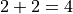
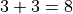
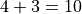
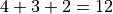

calculations
calculations
Image plane optimization
With option forme< 0, Lenstool performs image plane optimization. These calculations are done in parallel with OpenMP. However, allowing a large number of CPUs not necessarily increases the efficiency of the calculations. Managing the multithreading might take more time than doing the calculations themselves.
Here is a little benchmark (thanks to Benjamin Clement), that tells us how Lenstool scales up with the number of images per system.
For instance, with  systems of images each, Lenstool effectively uses 2 CPUs. Here are some other examples:
systems of images each, Lenstool effectively uses 2 CPUs. Here are some other examples:
Sum of images per system = Total number of images ==> CPUs effectively used
 =>
=>
 =>

 =>
 =>